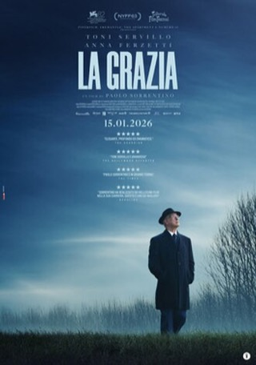

La Grazia
From the festival
Oscar®-winning auteur Paolo Sorrentino ( The Left Hand of God , MVFF44; Youth , MVFF38) once again finds his perfect collaborator in Toni Servillo, who brings depth and a nuanced performance to the role of Mariano de Santis, the President of the Italian Republic. Shot between Turin and Rome with Sorrentino’s signature visual finesse, and opening the 2025 Venice Film Festival, La Grazia unfolds like a philosophical drama—elegant, intense, and resonant with grace. In his final days of office, the widowed president navigates both official duties and a deeply personal longing for his late wife, while facing two moral dilemmas that challenge his sense of justice and humanity. As Mariano balances the weight of law, memory, and desire, Sorrentino crafts a story of love, loss, and the fleeting nature of time, infused with moments of humor, tenderness, and profound reflection. The film is Sorrentino at his best, a compelling exploration of life’s intimate and public intricacies. —João Federici
- Directed by
- Paolo Sorrentino
- Country
- Italy
- Year
- 2025
- Running time
- 133 minutes
- Language
- Italian
- Premiere
- West Coast Premiere
Source: Festival website programme (MVFF48): Wayback Machine copy; Festival film page: Wayback Machine copy; Poster from Wikipedia